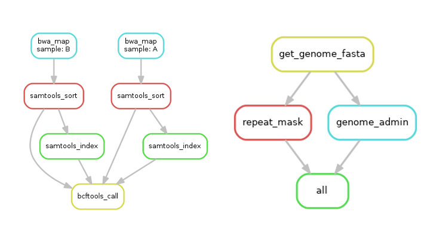

Written and presented by Julie Blommaert
Examples of workflow graphs produced by Snakemake:

An example with explanations:
Code example of two ‘rules’:
rule genome_admin:
"""
Shorten the fasta headers,make a blastdb, and fasta index the genome
"""
params:
genome = config["genome_name"]
input:
assembly=expand("assemblies/{name}.fasta",name=config["genome_name"])
output:
index =expand("assemblies/{name}.fasta.fai",name=config["genome_name"])
shell:
"""
samtools faidx {input.assembly}
makeblastdb -in {input.assembly} -parse_seqids -dbtype nucl
"""
rule get_genome_fasta:
"""
Retrieve the sequence in fasta format for a genome.
"""
threads: 1
params:
genomelink = config["ncbi_link"]
output:
outfile=expand("assemblies/{name}.fasta",name=config["genome_name"])
shell:
"""
wget {params.genomelink} -O temp.gz
gunzip temp.gz
cat temp| awk '{{if($1~">"){{printf($1"\\n")}}else{{print $0}}}}'> {output.outfile}
"""
The specific files on which the Snakemake workflow operates are determined by a config file:
config.yml:
genome_name: cygAtr1
ncbi_link: https://ftp.ncbi.nlm.nih.gov/genomes/all/GCF/013/377/495/GCF_013377495.1_Cygnus_atratus_primary_v1.0/GCF_013377495.1_Cygnus_atratus_primary_v1.0_genomic.fna.gz
masking_lib: /proj/sllstore2017073/private/RepeatLibs/lycPyr2_rm2.1_merged.lib
a larger workflow:
More comprehensive tutorials: